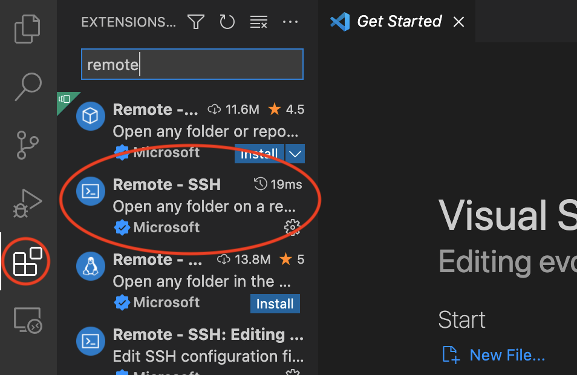

Working on the Vector Cluster (General Guide)
This guide provides the general process for getting access to and running jobs on the vector cluster.
Getting Access
An account on the cluster has already been made for you. You will just need to be able to login to get started.
Step 1: Logging In
You will receive an email from Vector with your credentials for logging into the cluster. The cluster is accessed using ssh so you can directly use the Linux/MacOS terminal or Powershell for Windows. If you want to have a more accessible environment, using an IDE like VS code is recommended. A quick guide for setting up VS code can be found here
Which ever method use choose from the above to login, the process is the same. First, ssh in.
ssh <your username>@<x>.vectorinstitute.ai
The x here refers to the different cluster domains available among q, v, and m. For these workshops, you can use <x>. toYou will be prompted for your password. Enter your password (provided in the email).
Step 2: Setting up MFA
After entering your password (correctly), you will be provided a link to enroll in DUO multi-factor authentication.
Install the DUO app on your iOS or Android device and scan the QR code given through the link to complete sign up.
When you login again, you can choose to get an SMS notif or directly get a passcode through the DUO app. You can also optionally setup the Vector VPN.
Step 3: Changing your password
Once you’ve successfully accessed the cluster after setting up DUO, you will need to change your password.
Enter the following command:
passwd
Change your password to something secure.
Step 4: Finishing Setup
You are automatically in your profile’s home directory. If you ever need to check which directory you are in, you can run the following command
pwd
and your current directory will be spit out.
Working on the Cluster
Running a Job
For the purposes of these workshops, we have simplified the computing guide provided through Vector (which you will have access to once your account is setup).
In order to run jobs on the Vector cluster, you need to submit a job on SLURM scheduler. To do so, you need to create a shell script (e.g.
job.sh) and submit the job. This is how the job will be submitted.
sbatch job.sh
The job.sh file defines the parameters for your job. The defaults defined below should be good.
#!/bin/bash
#SBATCH --job-name=any_name_here
#SBATCH --partition=p100,t4v1,t4v2,rtx6000
#SBATCH --gres=gpu:1
#SBATCH --qos=normal
#SBATCH --cpus-per-task=4
#SBATCH --mem-per-cpu=8G
#SBATCH --output=slurm-%j.out
#SBATCH --error=slurm-%j.err
# prepare your environment here
module load pytorch1.7.1-cuda11.0-python3.6
# put your command here
python train.py
sbatch will execute your job in the background. If you are looking to run an interactive job to debug, instead run
srun -c 4 --gres=gpu:1 --mem=32GB --qos=nopreemption -p interactive --pty bash
This will tell SLURM you want 4 CPUs(-c 4), 1 GPU(–gres=gpu:1), 32GB of CPU ram(–mem) on nopreemption QOS and on the interactive partition(-p) and then launch bash(–pty bash). Note that there is a limit of 3 hours before SLURM will cancel your interactive job.
To check the status of your job in the queue:
squeue -u "$USER"
Finally, to cancel a job
scancel JOBID
To test if everything is setup correctly, you can create a test script using the above default script with your own commands make sure the job is scheduled, you can see it queued and running, and can cancel it then you’re good to go with continuing your development.
Pre-emption & Checkpointing
To ensure fair allocation of the cluster resources, every hour, your job is evaluated for pre-emption, meaning that it may be stopped. To ensure you don’t lose your progress, it is important to write checkpoints for your models. /checkpoint/YOURUSERID should be the location you write these checkpoints to as it runs on a different kind of file system called MooseFS, which is great for storing a small amount of large files, like model checkpoints.
When you actually run a job, a folder to store that jobs checkpoints will be created called /checkpoint/YOURUSERID/YOURJOBID. This can be used in your code to load in a previous checkpoint when the job continues.
For more information on checkpointing on the cluster, use Vector’s Checkpoint Example
Setting up your environment
To view existing environments on the cluster, run:
module av
To load an existing environment, run:
module load ENV_YOU_WANT_TO_LOAD
If an environment doesn’t exist, create your own with venv:
python3 -m venv some_env
and activate the environment with:
source <some_env>/bin/activate
To deactivate, just execute deactivate in the command line.
(Optional) Vector VPN
The Vector VPN can be used to create an extra layer of security. Specifically, it can be used if you want to work on Jupyter Notebooks but have it be run on the cluster.
To set up the VPN
(Optional) VS Code Setup
Visual Studio (VS) Code is a great IDE that makes working on remote connections easy. It also provides other tools like Intellisense that makes development easy.
If you don’t already use it, it will make working on files on the cluster easier while you are debugging. Here is how it can be set up for use on the cluster:
Step 1:
Download the IDE from this link for which ever operating system you are using.
Step 2:
Open up VS code and install the Remote Development extension pack. To do this, click the extensions icon (group of 4 blocks) on the left hand side of the screen and search ‘remote’. The package ‘Remote - SSH’ should pop up. Install it.
{kind=link}
Step 3:
VS code can be used to save ssh configurations to make connecting easier. To get started with a connection, either press ctrl+p or click the gear at the bottom left hand side. This will open up the command palette where you can type ‘remote’ and select the option to add a new ssh host. The other option is to directly click the little arrow icon at the bottom left hand side which will ask you to select if you want to connect to a host or add a new host (the last option). Click latter option.
Step 4:
In all cases, you will now be able to type in command for the host you want to connect to. In our case, it is the same as was shown above.
ssh <your username>@<x>.vectorinstitute.ai
You can use the same process that was followed above to log in. Open the terminal by clicking Terminal->New Terminal at the top of your screen. Now you can open any files on the cluster by typing code <your file> in the command line and editing like you would any other IDE.
Tips:
It’s nice to be able to see the layout of your workspace all at once. You can open up a directory in your workspace by going to File->Open Folder and you will be able to see all your files laid out in explorer tab. As you go through files in the IDE, it will bring you to that location in your workspace.
You can easily find files in your workspace and open them up by pressing ctrl+p and typing in the approximate name of your file. You can select it from the list and easily open it up.
You can install Intellisense for whatever language you are working in that will make it easy to navigate and understand code. To install, click the extensions icon on the left hand on the left hand side, search ‘intellisense’ and your language of choice and click install. You may need to restart your session for intellisense to become active.
Take a look through the other extensions for anything that might be useful to you! There is lots of different ones that can be very helpful depending on what you are working on.